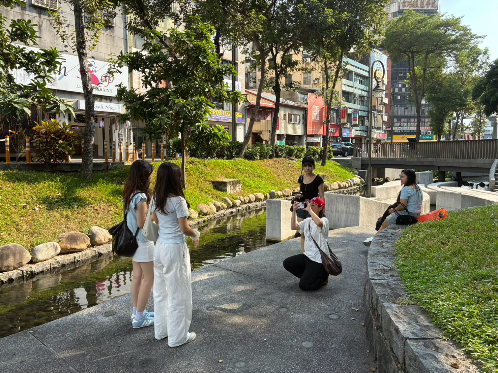

精選參展作品
以明快 Vlog 視角重塑臺中東協廣場，化解未知感並展現道地異國風采。
專題策展亮點
看見全臺唯一的垂直一站式跨國微出國聚落。
一站式垂直東南亞聚落
匯聚泰國、越南、印尼及菲律賓等多國特色，從民生超市、通訊服務到傳統小吃，打造出具備高度沉浸感與真實性的異國空間。
消除資訊與治安疑慮
多數年輕族群受長輩觀念與網路傳言影響而卻步。本企劃藉由短影音的明快節奏，重新包裝東協廣場，建立適合青年結伴探索的安心感。
大學生輕量型微旅行
針對預算有限但渴望新鮮感的大專院校學生，主打「免護照、500元內搞定吃喝玩樂」的高CP值在地出國體驗。
腳本大綱與分鏡規劃
劇本架構演繹
小琪在綠川旁感嘆之前的泰國旅行太短暫，小雅靈機一動，拉著她前往東協廣場展開「續攤微出國」！兩人穿梭在宛如異國的商場走道，先在東南亞超市瘋狂採購進口零食，接著在3C電子街尋寶。最後直奔美食區，大口咬下酥脆的越南法國麵包、狂飲道地泰式奶茶，點滿一桌酸辣風味大餐。傍晚時分，兩人提著滿滿的戰利品乾杯慶祝，用這趟隨興的台中輕旅行，完美延續度假的快樂氛圍！
抵達異國大樓：仰角全景開場
景別：以全景仰角拍攝東協廣場主視覺招牌，搭配輕快的Vlog配樂，營造出踏入異國領地的期待與儀式感。
異國超市：POV 主觀視角掃貨
景別：運用主觀視角（POV）快速將貨架上的零食掃入推車，配合清脆的結帳音效，突顯商場內豐富的購物選擇。
道地小吃特寫與歡慶乾杯
景別：近距離特寫夾取越式料理與吸吮泰奶的畫面，隨後以兩人碰杯歡呼作為結尾。畫面漸淡，定格於拍立得相片風格並浮現專題標語。
STP 行銷策略
[ S ] 市場區隔
以「文化接受度」及「消費預算敏感度」為變數，鎖定對異國文化抱有好奇心，但可支配所得較低的族群。
[ T ] 目標客群
鎖定18至24歲的中部大學生，這群人注重性價比，且容易受社群平台短影音與朋友揪團影響而產生行動。
[ P ] 市場定位
結合高密度的東南亞元素與複合式大樓空間，打造出全台唯一的「垂直一站式跨國微出國聚落」。
製作團隊分工
綠川側拍花絮：我們在城市中尋找異國的角落

黃子芸
統籌專案整體進度與跨組溝通，親自掌鏡並嚴格把控全片畫面構圖與視覺美感。
葉柏澤、林泑
負責產業環境分析、問卷數據洞察、SWOT與STP行銷策略擬定，建構嚴謹的企劃底層邏輯。
陳薇予、蘇昀蓉
構思影片分鏡與現場拍攝調度，精準掌握Vlog節奏剪輯與音效鋪陳，營造沉浸體驗。
蔡依臻
負責全劇組的後勤支援與庶務打理，並協助把控現場視覺與構圖。
菅原倖夏
設計並繪製專案封面與封底視覺，以及專屬拍攝道具製作。